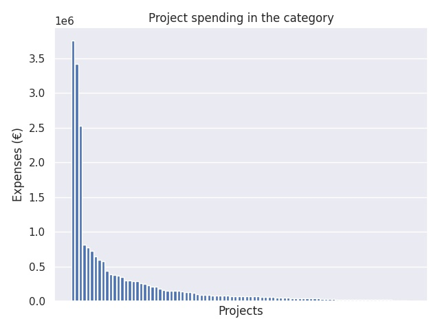

Valtion erityisavustus esi- ja perusopetuksen tasa-arvoa edistäviin toimenpiteisiin 2018
Category summary
249K spent on average
3.75M highest spending

Reports in the category
Helsingin kaupunki
Project name: -
3.75M spent
Espoon kaupunki
Project name: -
3.42M spent
Vantaan kaupunki
Project name: -
2.53M spent
Kuopion kaupunki
Project name: -
814K spent
Lahden kaupunki
Project name: -
772K spent
Kouvolan kaupunki
Project name: -
731K spent
Haapajärven kaupunki
Project name: -
646K spent
Joensuun kaupunki
Project name: -
602K spent
Lohjan kaupunki
Project name: -
578K spent
Hyvinkään kaupunki
Project name: -
436K spent
Porvoon kaupunki
Project name: -
393K spent
Kajaanin kaupunki
Project name: -
378K spent
Kirkkonummen kunta
Project name: -
370K spent
Raaseporin kaupunki
Project name: -
349K spent
Vihdin kunta
Project name: -
299K spent
Hämeenlinnan kaupunki
Project name: -
298K spent
Imatran kaupunki
Project name: -
293K spent
Iisalmen kaupunki
Project name: -
288K spent
Isojoen kunta
Project name: -
260K spent
Jämsän kaupunki
Project name: -
254K spent
Varkauden kaupunki
Project name: -
234K spent
Kokkolan kaupunki, sivistystoimi
Project name: -
211K spent
Akaan kaupunki
Project name: -
208K spent
Loviisan kaupunki
Project name: -
179K spent
Pietarsaari
Project name: -
165K spent
Haminan kaupunki
Project name: -
156K spent
Iin kunta
Project name: -
151K spent
Asikkalan kunta
Project name: -
150K spent
Vaasan kaupunki
Project name: -
149K spent
Heinolan kaupunki
Project name: -
145K spent
Hangon kaupunki
Project name: -
134K spent
Kempeleen kunta
Project name: -
133K spent
Närpes stad
Project name: -
121K spent
Järvenpään kaupunki
Project name: -
100K spent
Kankaanpään kaupunki
Project name: -
96.1K spent
Alajärven kaupunki
Project name: -
94.4K spent
Kiuruveden kaupunki
Project name: -
94.1K spent
Helsingin Uusi yhteiskoulu Osakeyhtiö
Project name: -
88.4K spent
Siuntion kunta
Project name: -
88K spent
Laitilan kaupunki
Project name: -
85.7K spent
Itä-Suomen yliopisto
Project name: -
84.3K spent
Helsingin Rudolf Steiner -koulun kannatusyhdistys ry
Project name: -
80.5K spent
Kimitoöns kommun
Project name: -
77.6K spent
Keuruun kaupunki
Project name: -
75.3K spent
Juuan kunta
Project name: -
75K spent
Kemijärven kaupunki
Project name: -
74.4K spent
Kannuksen kaupunki
Project name: -
74.4K spent
Haapaveden kaupunki
Project name: -
74.1K spent
Huittisten kaupunki
Project name: -
72.7K spent
Hankasalmen kunta
Project name: -
69.8K spent
Askolan kunta
Project name: -
67.9K spent
Kangasalan Kaupunki
Project name: -
67.9K spent
Joroisten kunta
Project name: -
64.8K spent
Pedersöre kommun
Project name: -
59.1K spent
Kristinestad stad
Project name: -
56.9K spent
Vörå kommun
Project name: -
56.8K spent
Forssan kaupunki
Project name: -
55.4K spent
Ikaalisten kaupunki
Project name: -
49.5K spent
Kurikan kaupunki
Project name: -
46.5K spent
Joutsan kunta
Project name: -
45.7K spent
Jyväskylän kristillisen koulun yhdistys ry
Project name: -
44K spent
Kauhajoen kaupunki
Project name: -
43.4K spent
Pargas stad
Project name: -
43.1K spent
Alavuden kaupunki
Project name: -
40.8K spent
Rudolf Steiner-Pedagogikens Vänner i Västnyland rf
Project name: -
40.8K spent
Espoon Steinerkoulun kannatusyhdistys ry
Project name: -
39.9K spent
Espoon kristillisen koulun kannatusyhdistys ry
Project name: -
37.7K spent
Apollon Yhteiskoulun kannatusyhdistys ry
Project name: -
35.1K spent
Hartolan kunta
Project name: -
30.2K spent
Ilmajoen kunta
Project name: -
29.8K spent
Juupajoen kunta
Project name: -
27.9K spent
Konneveden kunta
Project name: -
27.7K spent
Kaarinan kaupunki
Project name: -
26.9K spent
Jyväskylän yliopisto, Normaalikoulu
Project name: -
26.2K spent
Kaavin kunta
Project name: -
26.2K spent
Kannonkosken kunta
Project name: -
23.7K spent
Joensuun steinerkoulun kannatusyhdistys ry
Project name: -
23.1K spent
Kronoby kommun
Project name: -
22.5K spent
Kyyjärven kunta
Project name: -
22K spent
Enonkosken kunta
Project name: -
21.6K spent
Hyrynsalmen kunta
Project name: -
21.3K spent
Janakkalan kunta
Project name: -
20.1K spent
Korsnäs kommun
Project name: -
20.1K spent
Lestijärven kunta
Project name: -
19.8K spent
Karijoen kunta
Project name: -
19.4K spent
Juvan kunta
Project name: -
19.1K spent
Jyväskylän Seudun Steinerkoulun kannatusyhdistys r.y.
Project name: -
19.1K spent
Halsuan kunta
Project name: -
19K spent
Itä-Suomen suomalais-venäläisen koulun säätiö sr
Project name: -
10.2K spent
Hausjärven kunta
Project name: -
0 spent